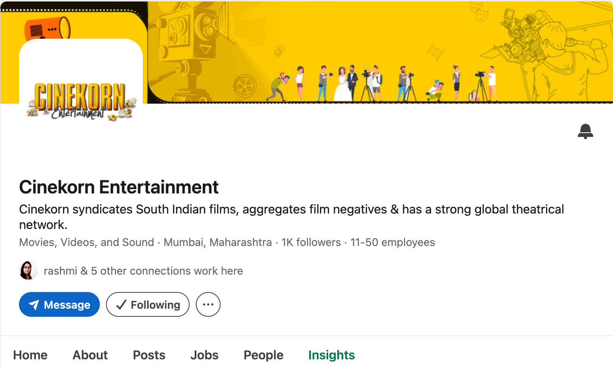

Case 06 · Cinekorn LinkedIn
Company Content That Explains the Industry
Editorial cadence on Cinekorn's LinkedIn page. Higher frequency, stronger engagement, zero paid spend.
Context
Managed since 13 April 2026
Cinekorn's company LinkedIn page needed a reason to publish beyond announcements. The page sits inside the entertainment distribution business, so the strongest material was often about the industry around the company, not only the company itself.
Problem
Announcement-only pages go quiet
When posting depends only on official updates, frequency collapses and the page stops demonstrating what the company understands. The alternative was editorial content grounded in the business of entertainment.
Strategy
Industry context as the publishing engine
Posts were built around information that could make someone stop and understand a development in the sector. Publishing frequency moved from roughly one post every 8.1 days to one every 2.4 days (about 3.4×). No paid spend was used in the comparison window.
Evidence
Before and after on the company page
| Metric | Before | After |
|---|---|---|
| Impressions | 6,263 | 17,289 |
| Clicks | 1,230 | 2,838 |
| Reactions | 94 | 525 |
| Engagement rate | 1.56% | 3.16% |
Impressions direction
From 6,263 before to 17,289 after (daily-average window)
Clicks 1,230 → 2,838 (+216%). Reactions 94 → 525 (+665%). Zero paid spend.
Before vs after mix
Relative scale of the after window versus before
Publishing frequency: about 1 post every 8.1 days → every 2.4 days (~3.4×).
Company page analytics for the comparison window.


Results
More consistent, more editorial
The page moved from sparse announcements to a steadier editorial rhythm. Activity rose across impressions, clicks and reactions without paid support. Live page: Cinekorn on LinkedIn.
Takeaway
What this showed
Company content does not always need to talk about the company. Sometimes the strongest way to establish presence is to demonstrate what the organisation understands about its own industry.